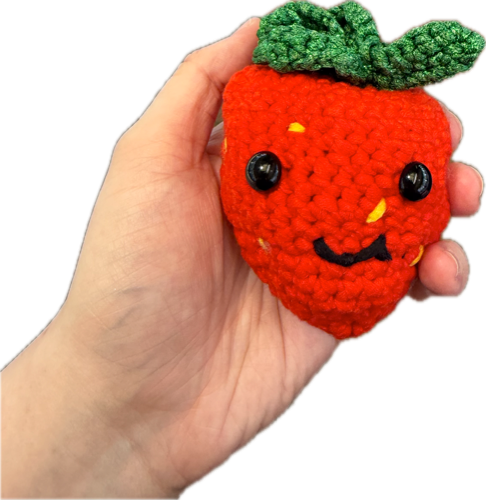
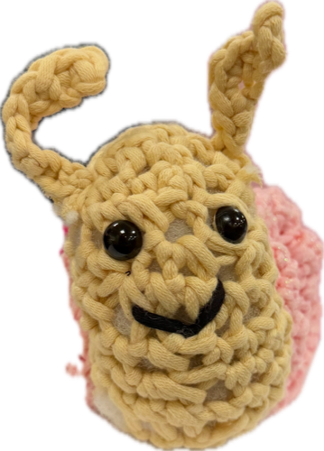
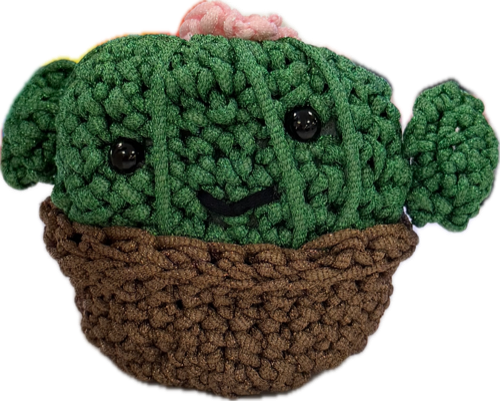

A bit more about me
About
The story behind the resume.
I've always had two things pulling at me: how people communicate, and how systems work. Talent Development turned out to be the place where both could live at once - a role where understanding people and building the tools they use aren't separate skills, they're the same job.
That combination is a lot of what makes my work effective. Understanding how people actually experience a process - what confuses them, what they skip, what they need explained twice - is what makes the tools I build worth using. It's one thing to automate a workflow; it's another to design it so people actually adopt it. I've found that's usually the harder problem, and it's the one I'm most interested in solving.
Right now, that means building GenAI tools that plug into the systems people already use, running training that gets adopted company-wide, and asking a lot of "does this actually make someone's day easier" questions before "can we build this." I'm based in Boston, obsessed with my hydroponic garden, and always looking for the next process that's begging to be automated.
Interests & hobbies
What I'm up to when I'm not automating something.
🧶
Amigurumi crochet
Crocheting small stuffed animals and characters, amigurumi-style.



🌶️
Hydroponic gardening
Currently growing five varieties of peppers hydroponically.
☕
Home barista
Making coffee at home, including a few hand-crafted syrups.
🍓
Polymer clay miniatures
Sculpting miniature objects out of polymer clay, mostly fruits and vegetables.
🥦
Vegan cooking
Cooking vegan meals at home.